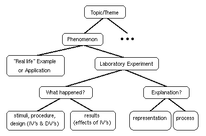
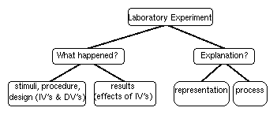

Assistant: Mike Fragassi
Office: PY 291C, 855-8755
E-mail: mfragass@indiana.edu
Course Topic: Cognitive psychologists study how people perceive and attend to the environment, how people learn and remember, how they comprehend and produce language, and how they reason and make decisions. I (Prof. Kruschke) define cognitive psychology as the reverse engineering of mind. Reverse engineering is a procedure that analyzes a working machine into its parts and interactions, with the goals of explaining, manipulating, and replicating the behavior of the machine. For example, aerospace engineers in various countries have been working hard to reverse engineer the American ``Stealth'' bomber. In cognitive psychology, the object of inquiry is the mind, a far more elusive target than the Stealth Bomber. Cognitive psychology treats the mind as the software, or program, that runs on the computer hardware of the brain. As illustrated in the figure at left, this computer metaphor asserts that mind (the ``thought bubble'') is to brain (the head) as software (the flowchart) is to hardware (the circuit board). Thus, one goal of cognitive psychology is to figure out the flow of information processing in the complicated program implemented by the brain. The point of the computer metaphor is not to assert that the mind is a program, rather, the point is that we might study human cognition at the level of information processing (software) separately from the level of neural processing (hardware).
 Goals of This Course: The figure at left shows how knowledge in this course is organized, and it also shows the main goals of the course. The course includes many topics or themes (indicated at the top of the figure), such as attention, perception, memory, etc., and within each topic are many phenomena, such as the limited capacity of attention, or the distinction between long-term and short-term memory. One goal of the course, indicated at the middle-left of the figure, is for you to discover real-life examples of those phenomena, so that the relevance of the material to our lives is clear. Another goal of the course is for you to understand thoroughly the scientific reasoning underlying laboratory experimentation, as indicated by the lower branches of the tree in the figure. The overall goal is for you to understand better the relations between laboratory data, theory, and everyday life, in science generally, not only in cognitive psychology. (For week-by-week topical goals, click here.)
 Exam Format: Exams will consist mostly of short-essay questions (answers of two or three paragraphs), combined with some multiple-choice questions. Typically an exam will have six or seven essay questions, and you need not answer one or two of your choice. Each exam will cover only the material discussed since the previous exam. The essay questions tend to emphasize the lower branches of the knowledge organization, as reproduced in the figure at left. (In the figure, ``IV'' and ``DV'' stand for independent variable and dependent variable, respectively.) Your answers to exam questions should explicitly address each of the boxes of the tree. The exams help you accomplish the goals of organizing your knowledge in a way that applies to science (and life) generally.
Exam Schedule: There will be three mid-term exams and
a final exam (4 exams total).
Mid-Term Exam 1: Tuesday, 19 September
Mid-Term Exam 2: Thursday, 12 October.
Mid-Term Exam 3: Tuesday, 7 November.
Final Exam: 12:30--2:30 pm, Thursday, 14 December.
Exam Grading: For every question, a key will be prepared that outlines the essential details needed for full credit, and the possible credit for each part. Each exam is worth 100 points. If you want to dispute a score you receive, you must submit your reasons in writing, along with your scored exam. This policy is helpful for two reasons: First, if a score change is justified, it gives us a paper document as a record of the change. Second, it gives you a chance to think through and present your argument carefully, to maximize your chances of success.
Exam Attendance: All four exams are mandatory. Missing an exam is strongly discouraged! If you know in advance that you must miss an exam, please let me know ahead of time, and it will usually be possible to take the exam one or two days before the scheduled date. If you unexpectedly miss an exam, you may take a make-up exam only if you have a cogent excuse, and only if you discuss the absence with me as soon as possible (typically the same or next day, via phone or e-mail if not in person). Make-up exams might not have the same format as in-class exams, and instead might consist entirely of essay questions.
"Applications" Papers: Due at the beginning of each exam is a brief paper that describes a "real-life" application of theoretical issues discussed in class. Whereas the exams emphasize the lower levels of the knowledge organization, the "application" papers emphasize the higher levels, as reproduced in the figure at right. The papers are designed to achieve the goal of relating cognitive psychology to everyday life.
Course Grading Method: Course grades will be based on absolute thresholds for total points, summing exam points plus paper points (480 possible), according to the following scale: 461-480 A+, 437-460 A, 418-436 A-, 399-417 B+, 380-398 B, 360-379 B-, 341-359 C+, 322-340 C, 303-321 C-, 240-302 D, 0-239 F. It is Psychology Department policy to give incompletes ("I" grades) only with a valid medical excuse.
Electronic Classroom: This class has an electronic
classroom on the World Wide Web. Announcements, review questions, exam
keys and scores, etc., will be posted there, and an electronic
newsgroup will be used for class discussion. How to access the Web
with Netscape will be demonstrated in class. The URL for our class is
http://www.indiana.edu/~jkkteach/P335/p335.html
Hints for Studying:
Required Textbook: Reed, S. K. (1992). Cognition, Third Edition. Pacific Grove, CA: Brooks\Cole Publishing Co.
Lecture Notes: Neither lecture notes nor copies of overhead projector transparencies are available. If you must miss a lecture, get notes from a classmate, and after looking over those notes if you have questions please see me or Mike Fragassi during our office hours.
Why Take this Course: P335 can partially fulfill the Area A Requirement for the Psychology Major (B.A. or B.S.), and it also fulfills the Mathematical Sciences and Cognition sub-area of the Distribution Requirements for a Bachelor's Degree in the College of Arts and Science. It can also fulfill requirements in other majors, such as Cognitive Science. I hope, however, you find that the value of the course extends far beyond the curricular requirements it fulfills. As a result of learning about applied human cognition you can be better decision makers, better evaluators of information in the media, and more tolerant and understanding of human behavior. By learning about experiments and various theories, you can learn about the process of scientific thinking, not just its ultimate products. Finally, by understanding the theories, you learn about a contemporary approach to one of the most exciting areas of inquiry for the twenty-first century, the workings of the mind. Two indications of its importance are that the College now includes "Cognition" in the title of one of its required sub-areas, and there is a new major called "Cognitive Science."
Week Date Ch Topic
-----------------------------------------------------------------
1 Tu 29 Aug 1 Syllabus and introduction to cognitive
psychology.
1 Th 31 Aug 2 Pattern recognition: templates, features,
geons. Memory for faces.
-----------------------------------------------------------------
2 Tu 5 Sep 2 Context effects: "ia" network model of
word-superiority effect (computer demo).
Iconic memory and attention.
2 Th 7 Sep 3 Attention: bottlenecks, capacity,
automaticity.
-----------------------------------------------------------------
3 Tu 12 Sep 3 Attention to locations, objects and
events.
3 Th 14 Sep 3 Attention and cognitive engineering.
-----------------------------------------------------------------
4 Tu 19 Sep MID-TERM EXAM 1 ("applications" paper due)
4 Th 21 Sep 4 Short-term memory; duration, capacity.
-----------------------------------------------------------------
5 Tu 26 Sep 4 Short-term memory; content, search of STM.
5 Th 28 Sep 5 Long-term memory vs. STM.
-----------------------------------------------------------------
6 Tu 3 Oct 5 Eye-witness memory. Long-term memory.
(video demo)
6 Th 5 Oct 6 Levels of processing in memory.
-----------------------------------------------------------------
7 Tu 10 Oct 6 Encoding specificity in memory.
7 Th 12 Oct MID-TERM EXAM 2 ("applications" paper due)
-----------------------------------------------------------------
8 Tu 17 Oct 7 Imagery: phenomena; relation to
perception; memory
8 Th 19 Oct 7 Analog vs. propositional representation:
maze running demo.
-----------------------------------------------------------------
9 Tu 24 Oct 8 Categorization: artificial and natural.
9 Th 26 Oct 8 Categorization: models (and some of my
research).
-----------------------------------------------------------------
10 Tu 31 Oct 9 Semantic Organization: effects & models;
SemNet demo.
10 Th 2 Nov 9 Semantic Organization: More effects &
models; SemNet demo.
-----------------------------------------------------------------
11 Tu 7 Nov MID-TERM EXAM 3 ("applications" paper due)
11 Th 9 Nov 10 Language; Eliza demo.
-----------------------------------------------------------------
12 Tu 14 Nov 10,11 Text comprehension; advertising demo.
12 Th 16 Nov 11,4 Readability, speed reading, learning to
read.
-----------------------------------------------------------------
13 Tu 21 Nov 12 Problem solving: representation and
process.
13 Th 23 Nov (Thanksgiving recess)
-----------------------------------------------------------------
14 Tu 28 Nov 12 Problem solving; Hobbits & Orcs computer
demo.
14 Th 30 Nov 13 Classroom Problem Solving.
-----------------------------------------------------------------
15 Tu 5 Dec 14 Decision Making.
15 Th 7 Dec Video: The Thinking Machine.
-----------------------------------------------------------------
Final Th 14 Dec FINAL EXAM: 12:30-2:30 pm ("applications"
paper due.)
-----------------------------------------------------------------
(Click here to see a schedule of what was actually covered, as opposed to the schedule above that showed what was planned.)
Disclaimer: This syllabus is meant to be suggestive, not absolute. Any and all of the information on this syllabus is subject to change at any time, including exam dates, grading policies, office hours, etc. Changes will be announced in class and on the Web.